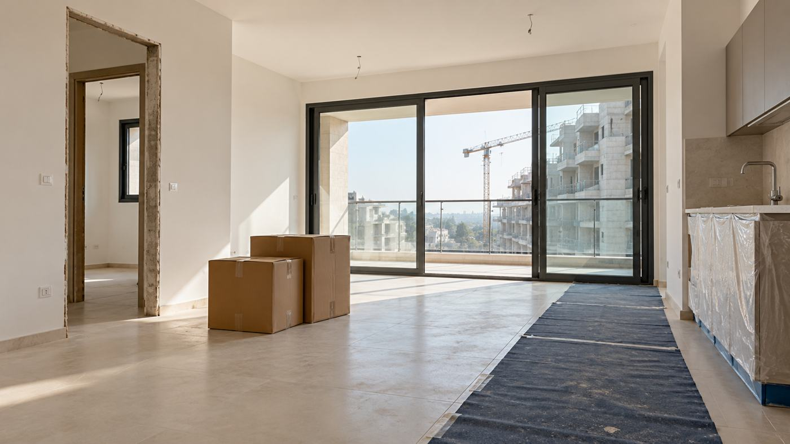

Articles et jurisprudence
Des décisions récentes du droit israélien, expliquées simplement, avec ce qu'il faut savoir avant de se retrouver dans une situation semblable.

Un technicien en climatisation n'est pas un agent de nettoyage : les limites de l'ordonnance d'extension du secteur du nettoyage
Un technicien en froid et climatisation, employé 16 ans dans les hôtels de la mer Morte, réclamait environ 337 000 ₪, surtout sur la base de l'ordonnance d'extension du secteur du nettoyage. Le tribunal a jugé qu'elle ne s'appliquait pas et ne lui a accordé qu'un rappel de cotisations retraite et une indemnité pour défaut d'avis écrit.
Lire l'articleLa valise de ski arrive avec un jour de retard : quelle indemnisation ?
Un couple parti au ski est resté un jour sans équipement, a acheté du matériel de remplacement et a réclamé 5 550 ₪. Le tribunal a jugé la compagnie aérienne responsable du retard, même si la panne venait du tri des bagages de l'aéroport, mais n'a accordé que 800 ₪.
Lire l'article
Annuler une formation en ligne plus d'un an après : quand les conditions d'annulation l'emportent
L'acheteuse d'une formation en ligne à 4 200 ₪ demandait un remboursement intégral près d'un an et cinq mois après l'achat, invoquant son état de santé. Demande rejetée : le délai d'annulation était dépassé, et les documents médicaux ne montraient pas qu'elle était empêchée d'annuler à temps.
Lire l'articleInondation due à une canalisation de l'immeuble : la locataire et les bailleurs s'attaquent mutuellement, les deux demandes sont rejetées
Une locataire a poursuivi les propriétaires en raison de l'humidité après une inondation provenant des canalisations de l'immeuble, de la dégradation des conditions de la résidence et d'un lave-vaisselle en panne, et les bailleurs ont formé une demande reconventionnelle. Le tribunal a rejeté les deux demandes, mais a ordonné aux bailleurs de restituer à la locataire un dépôt de garantie de 7 000 ₪.
Lire l'article
Assurance dépendance : les droits courent dès que l'état est documenté, pas dès la réception d'un document
Un assureur a fini par accepter la demande d'indemnités dépendance d'une assurée, mais en fixant le début des droits à la date de l'examen urologique qu'il avait lui-même exigé, environ huit mois après le dépôt de la demande. Le tribunal des petites créances a jugé que l'état de dépendance était établi dès avril 2025 et a condamné l'assureur à verser 22 400 ₪ supplémentaires, plus les frais.
Lire l'article
Contrat tripartite sur un chantier : l'entreprise générale ne peut pas retenir le paiement d'un fournisseur à cause d'un autre
Une entreprise générale avait signé une « commande tripartite » avec un poseur de bardage et un fournisseur de panneaux, puis retenu les paiements des deux. Le tribunal a jugé que chacun ne répondait que de sa propre part, et que les modifications manuscrites liaient l'entreprise.
Lire l'article
Contrat de service phares et rétroviseurs : que se passe-t-il quand la pièce dépasse le plafond ?
Une automobiliste payait chaque mois un service de remplacement de phares et rétroviseurs, et s'est vu réclamer 804 ₪ pour un phare. Elle jugeait la demande abusive. Le tribunal a estimé qu'elle correspondait au document de couverture qu'elle avait elle-même produit.
Lire l'articleVol pour Rome annulé après le tir de missile sur l'aéroport Ben Gourion : la compagnie dispensée d'indemnité
Un couple dont le vol pour Rome avait été annulé en mai 2025 avait été remboursé, mais réclamait tout de même 16 720 ₪ d'indemnité légale et de dommages-intérêts punitifs à une compagnie low cost. Le tribunal a jugé que l'annulation était due à des circonstances particulières échappant au contrôle de la compagnie, a rejeté la demande et a condamné le couple aux dépens.
Lire l'articleAvances sur salaire et enregistrement d'appel comme preuve : le salarié réclamait un rappel de salaire, il finit débiteur
Un serrurier-métallier employé environ trois mois réclamait un rappel de salaire ; l'employeur réclamait en retour des avances versées et non déduites. La demande du salarié est rejetée, il doit rembourser 6 845 ₪ et payer les frais. Le tribunal explique aussi quand un enregistrement ne vaut rien.
Lire l'article
Défauts dans les parties communes : un promoteur qui a mal réparé pendant des années perd son droit de réparer
Le comité représentatif d'une copropriété de Haïfa a poursuivi le promoteur de l'immeuble pour des défauts de construction dans les parties communes, et le promoteur a demandé à les réparer lui-même. Le tribunal a jugé que le promoteur avait épuisé son droit de réparer et l'a condamné à verser au comité 254 030 ₪, selon l'évaluation de l'expert judiciaire.
Lire l'article
Chute de mosaïque d'un immeuble ancien : l'action contre les promoteurs rejetée pour prescription
Le syndicat d'un immeuble d'habitation à Nahariya et un résident ont poursuivi les promoteurs en raison de la chute de carreaux de mosaïque des façades, en invoquant un vice caché de la structure. Le tribunal a rejeté la demande, principalement pour prescription, et a condamné les demandeurs à 80 000 ₪ de frais.
Lire l'article
Un locataire attaque ses voisins pour une fuite, sans expertise ni bailleur : demande radiée
Un locataire a réclamé 39 900 ₪ à deux voisins, affirmant qu'une fuite provenant de leurs appartements l'avait privé d'un usage normal du logement, et demandait surtout le remboursement de loyers. Le tribunal a radié la demande : aucune expertise n'était jointe, le bailleur n'avait pas été attrait à la procédure et le locataire n'avait pas révélé que le propriétaire avait déjà été indemnisé.
Lire l'articleUn bailleur encaisse un chèque de garantie sans préavis et doit rendre 11 151 ₪ à la locataire
Après sept ans de location, le bailleur a encaissé sans préavis un chèque de garantie de 30 000 ₪ et en a gardé 11 151 ₪ pour de prétendus dégâts. Le tribunal a jugé qu'il n'avait pas prouvé ces dégâts, l'a condamné à rendre la somme et a rejeté sa plainte en diffamation contre la locataire.
Lire l'article
Retard de 33 mois dans la livraison d'appartements : le Covid et les lenteurs administratives n'exonèrent pas le promoteur
L'acquéreuse de deux appartements neufs a poursuivi le promoteur pour un retard de livraison de 33 mois et pour une perte de valeur, et le promoteur lui a réclamé en retour le solde du prix. Le tribunal a rejeté toutes les justifications du promoteur et accordé 321 823 ₪ à l'acquéreuse, mais l'a condamnée à payer 316 521 ₪ de solde du prix, de sorte qu'au final elle n'a obtenu que 5 302 ₪.
Lire l'article
Retard de livraison d'un appartement : petites créances possibles, et la « guerre » doit être prouvée
Un couple d'acquéreurs a reçu son appartement à Ashkelon avec six mois de retard et a demandé une indemnité devant le tribunal des petites créances ; le promoteur invoquait la guerre comme force majeure et estimait le dossier trop complexe pour cette juridiction. Le tribunal de district a refusé l'autorisation d'appel du promoteur et maintenu une indemnité de 35 100 ₪.
Lire l'article
Un vendeur en retard pour le formulaire 4 ne peut pas annuler la vente aussitôt pour un bref retard de paiement
Des acheteurs d'une maison ont payé le solde en retard, après que le vendeur lui-même avait mis environ trois mois de plus que prévu à obtenir le formulaire 4, et le vendeur a annulé le contrat trois jours seulement après l'échéance. La Cour suprême a jugé que ce retard était bien une violation fondamentale, mais que la bonne foi obligeait le vendeur à accorder d'abord un délai : l'annulation est donc sans effet et le contrat sera exécuté.
Lire l'article